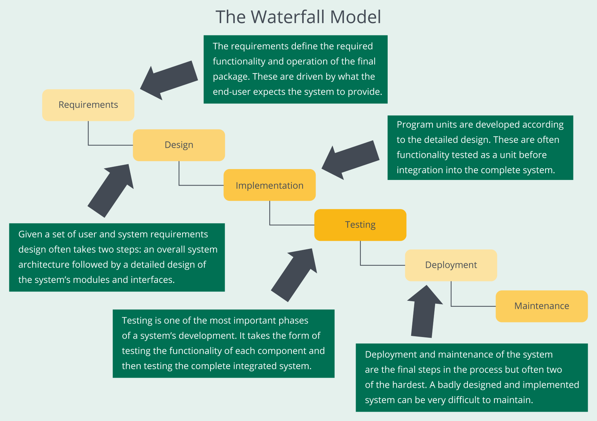
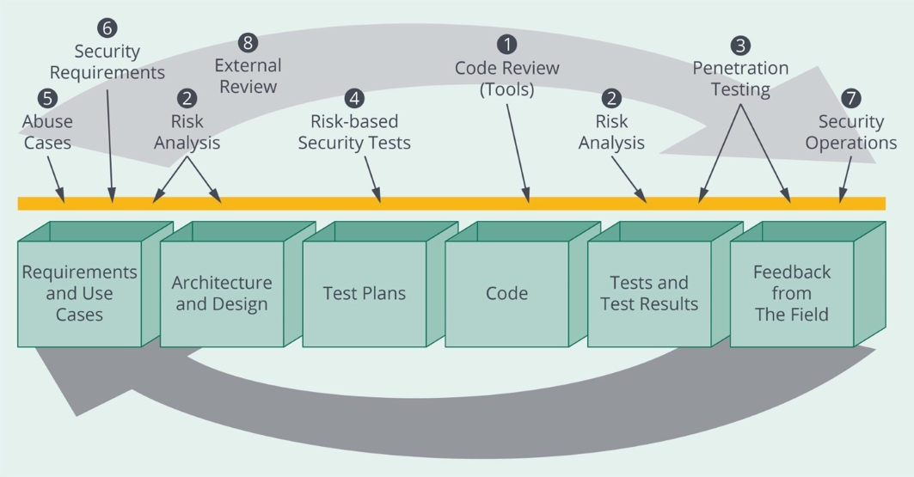
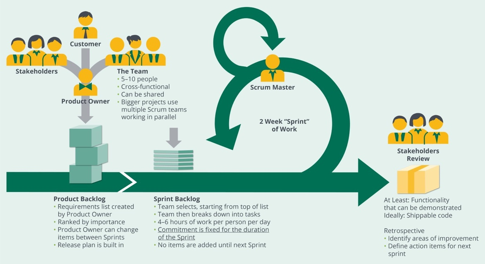
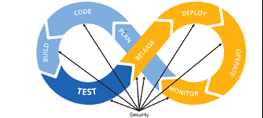

Security within a Software Development
Methodology (2.1)
Various development methodologies and frameworks have been
introduced to aid organizations with engineering software solutions. Some focus on
increasing coding output to bolster return on investment, some focus on embracing
change when requirements are not well established at the project’s initiation, and
some focus on security. This section will focus on the security considerations for
various methodologies. Independent of methodology, software security practices must
be incorporated and managed within the SDLC processes.
This domain will explore a number of commonly used noniterative
and iterative software methodologies.
Objectives
Explore security in predictive and adaptive methodologies for software
development.
Describe the incorporation of software security practices into the SDLC
processes.
Identify the DevOps and DevSecOps.
Overview
Addressing security in software development requires a different
approach in predictive planning versus adaptive planning. Security considerations
within various SDLC methodologies will differ based on core business requirements.
Some considerations include:
Governance for the evaluation and management of risk (e.g., risk in architecture
and design).
Identification of software security requirements.
Inclusion of security verification in software reviews, assessments, analyses,
tests, and evaluations.
Leveraging software configuration management/version control and change control
processes.
Implementation of adequate physical and logical security controls in various
environments including development, testing, staging, and preproduction.
Security in Predictive
Methodologies
A predictive approach to software development relies on known
objectives, paths, and flows from one phase of development (software maturation) to
the next. Phases are sequential and planning is based on known expected outcomes
such as specific project milestones for controlling the process. A good example of a
predictive methodology would be Waterfall—a classic example of a noniterative
approach to software development where the requirements are established before
project initiation.
A project approach where software activities are completed in
sequence, phases are longer in duration,
and clear gates exist (i.e., formal exit criteria and signoffs at the end of each
phase) provide adequate opportunity for the incorporation of relevant security
activities in each life cycle phase.
Waterfall Model
The Waterfall model is a sequential (noniterative) approach used
in software development processes (see figure). In this model, progress towards
software project completion flows steadily downwards (like a waterfall) through
various phases of the life cycle, including requirements, design, implementation,
testing, deployment, and maintenance. Typical Waterfall tasks may include:
Scoping and planning
Gathering and documenting requirements
Designing the application
Implementing the design
Coding the application
Performing quality assurance activities
Performing user acceptance testing (UAT)
Deploying the application

Figure 1: The Waterfall Model
A key assumption with Waterfall is that requirements are
completed early in the project; this would provide the opportunity to define project
scope and lay out a complete schedule for the design and subsequent implementation
of the overall application. In theory, all activities in a precursor phase must be
completed before proceeding to the next phase. Generally, this implies infrequent
release cycles with lengthy phases. Decades ago, Waterfall was used to successfully
develop software projects, but it is not best suited for rapid development where
requirement changes occur frequently. Today, Waterfall has largely been replaced
with methodologies that will
be covered later. However, Waterfall is still embraced within some organizations due
to contractual constraints or organizational culture, so it is important for
security-focused individuals to understand Waterfall.
For the security practitioner, Waterfall offers a
straightforward methodology with well-defined project phases to integrate security
considerations. Since the software project will be well defined at the beginning it
is important that security is considered at project initiation. For an internal
software project within an organization, this might be as simple as including
cybersecurity professionals as stakeholders when drafting the project charter and
requirements. For external software projects, clear and testable security
requirements should be incorporated into contractual language. Further, security
considerations can also be integrated into each gate or phase of the software
project beyond the Requirements phase.
The , a well-established organization that seeks to
become the international leader in critical measurements and equitable standards
offers, offers many special publications (SP) that provide quantifiable guidance on
the management of software security within the SDLC. For example,
NIST SP 800-160 Volume 1—Engineering Trustworthy Secure Systems and
NIST SP 800-160 Volume 2—Developing Cyber-Resilient Systems provides
security considerations that can inform cyber considerations for the Design phase of
Waterfall within an organization. NIST SP 800-160 Volume 2, Table D6: Strategic
Cyber Resiliency Design Principles defines five strategic cyber-resilient
design principles and maps them to design principles for other disciplines. A
security practitioner could tailor the guidance from D-6 for the organization’s
software project and include a mechanism to test for compliance at the end of the
Design phase.
One principle from D-6 is “Focus on Common Critical Assets.”
Suppose the software project includes an that is considered critical. The security practitioner may help the
organization develop design guidance for the API that includes fail-safe
communication redundancy and layered defense mechanisms, to name a few possible
examples, which bolster the cyber resiliency of the software project. In another
phase of Waterfall such as Testing, the organization could leverage best practices
for (SwA) from NIST SP
800-218—Secure Software Development Framework (SSDF) to describe the gated
criteria to move to the Deployment phase.
NIST guidance is one of many sources of standards, practices,
and frameworks. Some software security methodologies that have been levied with
Waterfall include but are not limited to:
The Microsoft Security Development Lifecycle (SDL)
The Seven Touchpoints of Secure Software (not necessarily a methodology)
Microsoft Security Development
Lifecycle (SDL)
The Security Development Lifecycle (SDL) was developed by
Microsoft as a set of 12 processes that follow the product life cycle from early
stages (e.g., training) to advanced stages (e.g., incident response). Intended to
help development teams with the construction of secure software, SDL introduces
security and privacy considerations in every phase of the development process.
To reduce the number of security-related defects and the
severity of the impact of any residual defects, SDL highlights the need for the
integration of tasks and checkpoints in the development process.
The Seven Touchpoints of Secure Software is simply a set of
security-related best practices that can be integrated into an existing SDLC process
to provide a way of adding security content and considerations to development
artifacts already being produced. These best practices were first introduced in the
early to mid-2000s.
An SDLC may choose to adopt all, or only some, of the
touchpoints; in either case they can still yield beneficial results.
The methodology has prioritized the touchpoints in order of
greatest (code review) to least (security operations) impact in improving software
security:
Code review
Architectural analysis
Penetration testing
Risk-based security tests
Abuse cases
Security requirements
Security operations

Figure 2: The Seven Touchpoints of Secure Software
The ordering of the Seven Touchpoints reflects the application
of best practices across many software projects spanning many years. Numbering is
meant to rank the tasks by value rather than imposing a chronological process. As an
example, the architectural risk analysis (2) may need to occur before code reviews
(1). Given such considerations, organizations need to analyze their needs and decide
how to integrate the Seven Touchpoints into the phases of the organization’s
Waterfall model.
Security in Adaptive/Iterative
Methodologies
In contrast to Waterfall, an adaptive software development
approach relies on short iterations where the project is deconstructed into small
components that may be started and completed during short development iterations.
The incremental nature of adaptive planning and execution provides the ability to
remain flexible as project requirements and scope evolve throughout the SDLC.
Addressing security in fast-paced, dynamic software environments
that are typically characterized by unfamiliar territories, uncertain outcomes, and
short time-boxed iterations (e.g., one or two weeks) may present challenges to
incorporating security activities into the SDLC. This is especially true when an
organization or security practitioner is transitioning from a predictive environment
to adaptive. However, implementing good security within adaptive SDLC is achievable.
Agile Methods
Focusing on minimizing upfront planning, quickly generating
working code, making design decisions, and adjusting code as the system is being
implemented and tested are key characteristics of Agile methods. Often requirements
for one software feature may be drafted based on the outcomes of a recently
completed iteration rather than creating all project requirements at a software
project initiation. Typically, each Agile iteration is referred to as a sprint.
Agile methods may not allow sufficient time for traditional
detailed security planning or analysis. Examples of Agile implementations include
and Extreme Programming (XP).
Adaptive methods are covered below before discussing security considerations.
Scrum
The Scrum concept originated with the sport of rugby, where
players engage in a scrummage, or scrum, to gain control of the ball. Scrum as an
Agile method involves a small team, usually with a team leader called a Scrum
Master. The team’s main purpose is to clear away obstacles, also called impediments
or blockers, so that a task can be completed quickly (see figure).

Figure 3: Example of Agile Method Implementation
(Scrum)
Extreme Programming (XP)
Extreme Programming (XP) is a lightweight methodology best
suited for developing software when the requirements are vague or change frequently.
XP methodology relies on one or more roles with associated responsibilities assigned
to each member of the team, including programmer, customer, tester, and coach roles,
among all possible roles.
There are dozens of practices in XP, with a few mentioned below:
Pair Programming. Relies on two programmers at one machine for all
production code. One programmer attends to coding and the other evaluates and
improves the code.
Refactoring. Entails simplifying the program when implementing the
feature.
Collective Ownership. Places the responsibility for the whole of the
system on the team, as opposed to individuals. Any team member can change code
anywhere, at any time.
Security in Agile
Implementations
Ensuring software security is implemented into iterative Agile
applications requires the tight integration of security discipline into
organizational Agile development processes. Integration ensures that security is
considered in every sprint, whether tasking consists of building new software or
updating existing functionality. When a sprint ends, any tasks marked done are
considered complete shippable code. If we want security, quality, or safety
considered part of done code—those processes must fit within the context of a
sprint.
For the software process to remain Agile, secure software design
and assurance activities and controls need to minimize additional cost or time on
software projects. To fit within sprints, costly and timeconsuming security
activities, such as code reviews, static analysis, and penetration testing, need to
become less expensive, tightly scoped, and often automated so that they can be
performed earlier and more frequently.
The following are a few attempts to integrate Agile
methods with security:
Secure Scrum. Encourages identification of security concerns during
initial backlog planning, later refinements, and sprint planning. User stories
related to security concerns are clearly marked to ensure that security concerns
will be addressed in the sprint that addresses the user story. Risk analysis of
each user story is performed to quantify potential losses resulting from
software compromises in monetary terms. Secure Scrum permits third-party
security experts to be involved in planning (for training of the Scrum team and
identifying security concerns), and during sprints (to provide turnkey solutions
to security issues). Scrum Masters object to the inclusion of outsiders on a
Scrum team, insisting that security must be addressed by the Scrum team itself
as a part of normal unit testing, continuous integration, continuous delivery,
and the SDLC’s other compact, continuous feedback loops. They also insist that
any security tools must be understandable by developers and must support how
they already work and think.
Microsoft SDL/Agile. Decomposes the set of security practices from
Microsoft SDL into smaller steps that can be levied by Agile development teams
within the context of a sprint iteration.
DevOps + Security = DevSecOps
Development Operations (DevOps) is often described as a logical
extension of Agile, pioneered by lean-thinking organizations seeking solutions for
rapid and frequent delivery of software. Many modern organizations have adopted
DevOps for a variety of reasons—most notably because businesses need to build, test,
and release software faster and more reliably to stay competitive. Much like Agile
implements’ shorter development iterations, DevOps has the goal of shortening the
SDLC while improving the reliability of incremental source changes such as feature
enhancements, bug fixes, and updates.
Technological aspects of DevOps are primarily about continuous
integration/continuous delivery (CI/CD) practices, relying on the automation of much
of the routine work of transforming code changes into verified production software.
Several tools and technologies have been introduced for this specific purpose, but
successful implementation of DevOps requires special attention to—and organizational
investment in—people and processes in addition to technology.
Development, Security, and Operations ( is everything that DevOps is
but adds an additional focus on software assurance. DevSecOps bridges the gap
between security and DevOps. Security should ultimately remain focused on minimizing
enterprise risk, and at the same time allow development to deliver more secure code
at the rate dictated by business needs. This implies that traditional
resource-intensive and heavyweight security activities throughout the
software-development life cycle must also change from being prescribed by nature to
adaptive. As depicted in the figure, security must be injected into the existing
development workflow in DevOps life cycle.

Figure 4: DevSecOps
Security Operations vs. Secure
Software
We should be well acquainted with the foundations of security
Confidentiality, Integrity, and Availability (CIA). Secure practitioners need to
understand the difference between security operations for software development teams
and producing security-hardened software and the CIA considerations for both when
managing software security. One way to illustrate the difference, is to discuss each
within the context of DevSecOps.
Operational security considerations exist for development teams
producing software using the DevSecOps CI/CD pipeline. The source code repository
and integrated development environment (IDE) used should ensure that the software
source is available during the sprint, only accessible by development when being
stored in the repository (confidential), and that no developer can deploy production
changes without leveraging the quality and security checks built into the pipeline
(integrity). This is an oversimplified example that illustrates Security Operations
within the SDLC. Note that all the mentioned operational security does not directly
relate to the end software product being more secure.
In addition to Security Operations, we also need to conduct
software hardening through software assurance processes to make organizational
software secure and resilient. Software hardening focuses on producing software
capable of satisfying the organizations defined levels of CIA for the end software
product. These efforts might include static analysis—analysing uncompiled source
code to find CWEs. It might also include dynamic analysis—analysing the compiled
source within a runtime environment to find vulnerabilities such as buffer
overflows.
As security practitioners, independent of methodology, we must
ensure that the process for developing software is secure from an operational
perspective while delivering software that functions as intended and is free of
vulnerabilities, either intentionally or unintentionally designed or inserted as
part of the software throughout the life cycle (CNSSI 4009-2015).
Security within a Software Development Methodology (2.1)
Various development methodologies and frameworks have been introduced to aid organizations with engineering software solutions. Some focus on increasing coding output to bolster return on investment, some focus on embracing change when requirements are not well established at the project’s initiation, and some focus on security. This section will focus on the security considerations for various methodologies. Independent of methodology, software security practices must be incorporated and managed within the SDLC processes.
This domain will explore a number of commonly used noniterative and iterative software methodologies.
Objectives
Overview
Addressing security in software development requires a different approach in predictive planning versus adaptive planning. Security considerations within various SDLC methodologies will differ based on core business requirements. Some considerations include:
Security in Predictive Methodologies
A predictive approach to software development relies on known objectives, paths, and flows from one phase of development (software maturation) to the next. Phases are sequential and planning is based on known expected outcomes such as specific project milestones for controlling the process. A good example of a predictive methodology would be Waterfall—a classic example of a noniterative approach to software development where the requirements are established before project initiation.
A project approach where software activities are completed in sequence, phases are longer in duration, and clear gates exist (i.e., formal exit criteria and signoffs at the end of each phase) provide adequate opportunity for the incorporation of relevant security activities in each life cycle phase.
Waterfall Model
The Waterfall model is a sequential (noniterative) approach used in software development processes (see figure). In this model, progress towards software project completion flows steadily downwards (like a waterfall) through various phases of the life cycle, including requirements, design, implementation, testing, deployment, and maintenance. Typical Waterfall tasks may include:
Figure 1: The Waterfall Model
A key assumption with Waterfall is that requirements are completed early in the project; this would provide the opportunity to define project scope and lay out a complete schedule for the design and subsequent implementation of the overall application. In theory, all activities in a precursor phase must be completed before proceeding to the next phase. Generally, this implies infrequent release cycles with lengthy phases. Decades ago, Waterfall was used to successfully develop software projects, but it is not best suited for rapid development where requirement changes occur frequently. Today, Waterfall has largely been replaced with methodologies that will be covered later. However, Waterfall is still embraced within some organizations due to contractual constraints or organizational culture, so it is important for security-focused individuals to understand Waterfall.
For the security practitioner, Waterfall offers a straightforward methodology with well-defined project phases to integrate security considerations. Since the software project will be well defined at the beginning it is important that security is considered at project initiation. For an internal software project within an organization, this might be as simple as including cybersecurity professionals as stakeholders when drafting the project charter and requirements. For external software projects, clear and testable security requirements should be incorporated into contractual language. Further, security considerations can also be integrated into each gate or phase of the software project beyond the Requirements phase.
The , a well-established organization that seeks to become the international leader in critical measurements and equitable standards offers, offers many special publications (SP) that provide quantifiable guidance on the management of software security within the SDLC. For example, NIST SP 800-160 Volume 1—Engineering Trustworthy Secure Systems and NIST SP 800-160 Volume 2—Developing Cyber-Resilient Systems provides security considerations that can inform cyber considerations for the Design phase of Waterfall within an organization. NIST SP 800-160 Volume 2, Table D6: Strategic Cyber Resiliency Design Principles defines five strategic cyber-resilient design principles and maps them to design principles for other disciplines. A security practitioner could tailor the guidance from D-6 for the organization’s software project and include a mechanism to test for compliance at the end of the Design phase.
One principle from D-6 is “Focus on Common Critical Assets.” Suppose the software project includes an that is considered critical. The security practitioner may help the organization develop design guidance for the API that includes fail-safe communication redundancy and layered defense mechanisms, to name a few possible examples, which bolster the cyber resiliency of the software project. In another phase of Waterfall such as Testing, the organization could leverage best practices for (SwA) from NIST SP 800-218—Secure Software Development Framework (SSDF) to describe the gated criteria to move to the Deployment phase.
NIST guidance is one of many sources of standards, practices, and frameworks. Some software security methodologies that have been levied with Waterfall include but are not limited to:
Microsoft Security Development Lifecycle (SDL)
The Security Development Lifecycle (SDL) was developed by Microsoft as a set of 12 processes that follow the product life cycle from early stages (e.g., training) to advanced stages (e.g., incident response). Intended to help development teams with the construction of secure software, SDL introduces security and privacy considerations in every phase of the development process.
To reduce the number of security-related defects and the severity of the impact of any residual defects, SDL highlights the need for the integration of tasks and checkpoints in the development process.
SDL Practices can be summarized as:
The Seven Touchpoints of Secure Software
The Seven Touchpoints of Secure Software is simply a set of security-related best practices that can be integrated into an existing SDLC process to provide a way of adding security content and considerations to development artifacts already being produced. These best practices were first introduced in the early to mid-2000s.
An SDLC may choose to adopt all, or only some, of the touchpoints; in either case they can still yield beneficial results.
The methodology has prioritized the touchpoints in order of greatest (code review) to least (security operations) impact in improving software security:
Figure 2: The Seven Touchpoints of Secure Software
The ordering of the Seven Touchpoints reflects the application of best practices across many software projects spanning many years. Numbering is meant to rank the tasks by value rather than imposing a chronological process. As an example, the architectural risk analysis (2) may need to occur before code reviews (1). Given such considerations, organizations need to analyze their needs and decide how to integrate the Seven Touchpoints into the phases of the organization’s Waterfall model.
Security in Adaptive/Iterative Methodologies
In contrast to Waterfall, an adaptive software development approach relies on short iterations where the project is deconstructed into small components that may be started and completed during short development iterations. The incremental nature of adaptive planning and execution provides the ability to remain flexible as project requirements and scope evolve throughout the SDLC.
Addressing security in fast-paced, dynamic software environments that are typically characterized by unfamiliar territories, uncertain outcomes, and short time-boxed iterations (e.g., one or two weeks) may present challenges to incorporating security activities into the SDLC. This is especially true when an organization or security practitioner is transitioning from a predictive environment to adaptive. However, implementing good security within adaptive SDLC is achievable.
Agile Methods
Focusing on minimizing upfront planning, quickly generating working code, making design decisions, and adjusting code as the system is being implemented and tested are key characteristics of Agile methods. Often requirements for one software feature may be drafted based on the outcomes of a recently completed iteration rather than creating all project requirements at a software project initiation. Typically, each Agile iteration is referred to as a sprint.
Agile methods may not allow sufficient time for traditional detailed security planning or analysis. Examples of Agile implementations include and Extreme Programming (XP). Adaptive methods are covered below before discussing security considerations.
Scrum
The Scrum concept originated with the sport of rugby, where players engage in a scrummage, or scrum, to gain control of the ball. Scrum as an Agile method involves a small team, usually with a team leader called a Scrum Master. The team’s main purpose is to clear away obstacles, also called impediments or blockers, so that a task can be completed quickly (see figure).
Figure 3: Example of Agile Method Implementation (Scrum)
Extreme Programming (XP)
Extreme Programming (XP) is a lightweight methodology best suited for developing software when the requirements are vague or change frequently. XP methodology relies on one or more roles with associated responsibilities assigned to each member of the team, including programmer, customer, tester, and coach roles, among all possible roles.
There are dozens of practices in XP, with a few mentioned below:
Security in Agile Implementations
Ensuring software security is implemented into iterative Agile applications requires the tight integration of security discipline into organizational Agile development processes. Integration ensures that security is considered in every sprint, whether tasking consists of building new software or updating existing functionality. When a sprint ends, any tasks marked done are considered complete shippable code. If we want security, quality, or safety considered part of done code—those processes must fit within the context of a sprint.
For the software process to remain Agile, secure software design and assurance activities and controls need to minimize additional cost or time on software projects. To fit within sprints, costly and timeconsuming security activities, such as code reviews, static analysis, and penetration testing, need to become less expensive, tightly scoped, and often automated so that they can be performed earlier and more frequently.
The following are a few attempts to integrate Agile methods with security:
DevOps + Security = DevSecOps
Development Operations (DevOps) is often described as a logical extension of Agile, pioneered by lean-thinking organizations seeking solutions for rapid and frequent delivery of software. Many modern organizations have adopted DevOps for a variety of reasons—most notably because businesses need to build, test, and release software faster and more reliably to stay competitive. Much like Agile implements’ shorter development iterations, DevOps has the goal of shortening the SDLC while improving the reliability of incremental source changes such as feature enhancements, bug fixes, and updates.
Technological aspects of DevOps are primarily about continuous integration/continuous delivery (CI/CD) practices, relying on the automation of much of the routine work of transforming code changes into verified production software. Several tools and technologies have been introduced for this specific purpose, but successful implementation of DevOps requires special attention to—and organizational investment in—people and processes in addition to technology.
Development, Security, and Operations ( is everything that DevOps is but adds an additional focus on software assurance. DevSecOps bridges the gap between security and DevOps. Security should ultimately remain focused on minimizing enterprise risk, and at the same time allow development to deliver more secure code at the rate dictated by business needs. This implies that traditional resource-intensive and heavyweight security activities throughout the software-development life cycle must also change from being prescribed by nature to adaptive. As depicted in the figure, security must be injected into the existing development workflow in DevOps life cycle.
Figure 4: DevSecOps
Security Operations vs. Secure Software
We should be well acquainted with the foundations of security Confidentiality, Integrity, and Availability (CIA). Secure practitioners need to understand the difference between security operations for software development teams and producing security-hardened software and the CIA considerations for both when managing software security. One way to illustrate the difference, is to discuss each within the context of DevSecOps.
Operational security considerations exist for development teams producing software using the DevSecOps CI/CD pipeline. The source code repository and integrated development environment (IDE) used should ensure that the software source is available during the sprint, only accessible by development when being stored in the repository (confidential), and that no developer can deploy production changes without leveraging the quality and security checks built into the pipeline (integrity). This is an oversimplified example that illustrates Security Operations within the SDLC. Note that all the mentioned operational security does not directly relate to the end software product being more secure.
In addition to Security Operations, we also need to conduct software hardening through software assurance processes to make organizational software secure and resilient. Software hardening focuses on producing software capable of satisfying the organizations defined levels of CIA for the end software product. These efforts might include static analysis—analysing uncompiled source code to find CWEs. It might also include dynamic analysis—analysing the compiled source within a runtime environment to find vulnerabilities such as buffer overflows.
As security practitioners, independent of methodology, we must ensure that the process for developing software is secure from an operational perspective while delivering software that functions as intended and is free of vulnerabilities, either intentionally or unintentionally designed or inserted as part of the software throughout the life cycle (CNSSI 4009-2015).